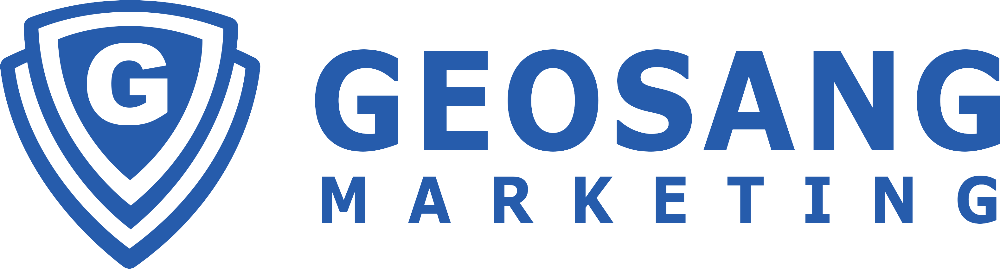

AEO/GEO
검색 최적화
고객 질문을 분석하고 AI가 이해하기 쉬운 답변형 콘텐츠 구조를 설계합니다.

무료 진단 신청 →AI SEARCH READY MARKETING / 2026
이제 고객은 검색어 대신 질문합니다.
AI 검색 결과와 고객의 질문 속에 브랜드가 보이도록,
지금의 마케팅 구조를 진단하세요.
계약 부담 없이 · 현재 상태와 개선 방향을 먼저 안내합니다
SEARCH
IS A
CONVERSATION
“우리 동네
피부과 추천해줘”
지역 사업자부터 성장하는 팀까지, 고객이 찾는 경로를 설계합니다
혹시 이런 고민, 있으신가요?
블로그 글은 많은데
문의가 없습니다.
플레이스 순위가
계속 흔들립니다.
SNS는 하지만 매출로
이어지지 않습니다.
AI 검색을 어떻게
시작할지 모르겠습니다.
이제 중요한 건 콘텐츠의 양이 아닙니다. 고객이 검색하고, 비교하고, 질문하고, 상담을 요청하는 전 과정이 연결되어야 합니다.
THE SHIFT IS ALREADY HERE
고객은 네이버·구글에 키워드를 입력하는 데서 멈추지 않습니다. ChatGPT, Gemini, Perplexity, 네이버 AI 검색과 Google AI Overview에 질문하고 답을 받습니다.
ONE CONNECTED SYSTEM
거상마케팅센터는 단순 광고 대행이 아닙니다. 검색 의도와 콘텐츠 구조, AI 검색 대응, 네이버 노출, SNS 유입, 상담 신청 전환까지 하나의 시스템으로 설계합니다.
04 / 제공 서비스
고객 질문을 분석하고 AI가 이해하기 쉬운 답변형 콘텐츠 구조를 설계합니다.
검색 의도·지역성·전문성·CTA를 함께 고려해 유입을 상담으로 연결합니다.
기본 정보부터 사진, 리뷰, 예약, 외부 유입까지 지역 고객의 선택을 돕습니다.
릴스·쇼츠·카드뉴스를 조회수에서 리드 수집으로 이어지는 경로로 만듭니다.
하나의 콘텐츠를 여러 채널에서 반복 활용하는 지속 가능한 자산을 쌓습니다.
랜딩페이지, 블로그, 네이버 플레이스, SNS, 검색 노출 상태를 확인합니다.
고객이 어떤 질문과 키워드로 들어오는지 분석합니다.
현재 콘텐츠가 검색·정보 탐색·상담 요청으로 연결되는지 살핍니다.
AEO/GEO, 네이버 SEO, 플레이스, SNS의 우선순위를 제안합니다.
직접 할 일과 도움이 필요한 일을 구분한 현실적인 실행안을 드립니다.
WHAT WE CHECK
“블로그는 하는데 문의가 적다”, “AI 검색에도 우리 브랜드가 보이면 좋겠다”, “콘텐츠를 감이 아닌 시스템으로 만들고 싶다”면 무료 진단부터 시작해 보세요.
AEO/GEO 관점으로 고객 질문에 답하는 콘텐츠 구조를 설계합니다.
블로그, 플레이스, 지역 마케팅의 흐름을 함께 이해합니다.
하나의 콘텐츠를 블로그·릴스·강의 자료로 확장합니다.
단순 노출이 아니라 상담과 매출을 기준으로 봅니다.
AEO는 고객의 질문에 답하는 콘텐츠를 최적화하는 방식이며, GEO는 생성형 AI 검색 환경에서 브랜드와 콘텐츠가 잘 인식되도록 설계하는 접근입니다.
접근은 다르지만 함께 설계해야 효과가 큽니다. 네이버 검색 노출 구조와 AI가 이해·인용하기 좋은 정보 구조를 연결합니다.
가능합니다. 현재 운영 중인 블로그, 플레이스, SNS부터 진단하고 필요한 경우 상담 신청용 랜딩페이지의 방향도 함께 제안합니다.
그렇지 않습니다. 먼저 보유한 콘텐츠와 채널을 정비하고, 전환 동선이 준비된 다음 필요한 광고 집행을 검토하는 것이 좋습니다.
아닙니다. 현재 상태와 개선 방향을 안내드리는 과정이며, 이후 실행이 필요할 때 원하는 방식을 선택하실 수 있습니다.
YOUR NEXT CUSTOMER IS ALREADY ASKING
더 많은 콘텐츠보다 먼저 필요한 건 고객에게 발견되고,
상담으로 이어지는 구조입니다.
FREE MARKETING DIAGNOSIS
아래 정보를 남겨주시면 현재 마케팅 상태를 확인한 뒤 AEO/GEO, 네이버 SEO, 플레이스, SNS 관점의 개선 방향을 안내드립니다.